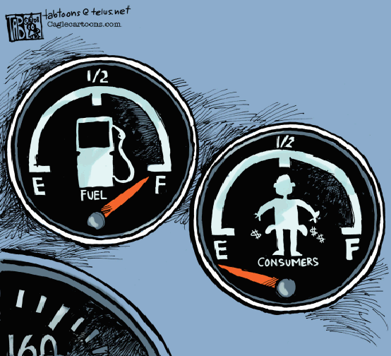

Resource Usage

CPU Time
- With limited CPU time, user cares about average solution time
- Measure average CPU time over problems solved
- Average over all problems ≈ number of problems not solved
Wall Clock Time
- Of direct interest to users
- Measure average wall clock time over problems solved
Memory Use
- Of interest when sharing memory with other processes
- Measure average and maximal footprint
- Excessive memory use increases wall clock times
- Use wall clock limits to limit memory use